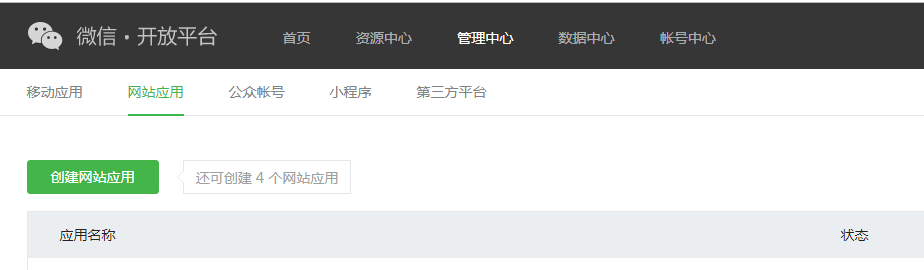
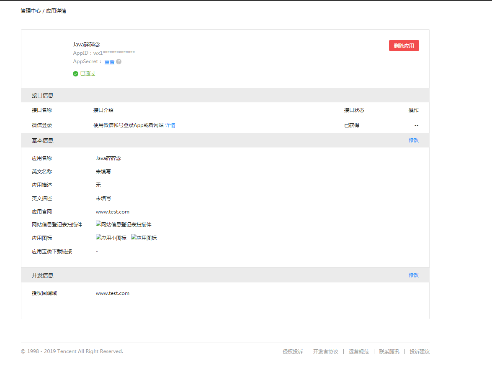
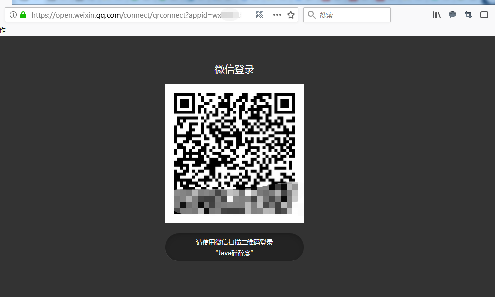
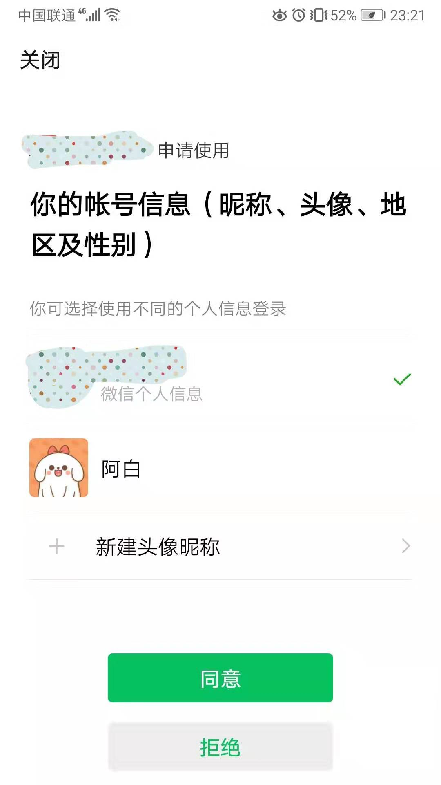

最近网站PC端集成微信扫码登录，踩了不少坑，在此记录下实现过程和注意事项。
一、微信开放平台操作步骤1.创建“网站应用”2.获取AppID和AppSecret二、开发指南三、开发实战1、pom.xml引入jar包2、配置文件添加对应的配置3、初始化配置4、控制层核心代码四、运行效果1.构造pc端链接2.微信扫描生成的二维码3.获取微信用户信息
微信开放平台地址：https://open.weixin.qq.com
一定要注意，网站集成微信登录需要在微信开放平台操作，它和微信公众平台不一样，虽然双方最后的用户唯一标识都是openId，但是是不互通的。如果开发平台想和公众平台相互通，两个平台得互相绑定，然后获取唯一识别的unionId。
下面说下在开放平台上的操作步骤：
由于到对接PC网站登录，所以创建“网站应用”，操作截图如下：
等微信审核通过后，会分配对应的AppId，AppSecret需要管理员扫描生成，生成后截图如下：

微信OAuth2.0授权登录让微信用户使用微信身份安全登录第三方应用或网站，在微信用户授权登录已接入微信OAuth2.0的第三方应用后，第三方可以获取到用户的接口调用凭证（access_token），通过access_token可以进行微信开放平台授权关系接口调用，从而可实现获取微信用户基本开放信息和帮助用户实现基础开放功能等，整体流程为：
1. 第三方发起微信授权登录请求，微信用户允许授权第三方应用后，微信会拉起应用或重定向到第三方网站，并且带上授权临时票据code参数；
2. 通过code参数加上AppID和AppSecret等，通过API换取access_token；
3. 通过access_token进行接口调用，获取用户基本数据资源或帮助用户实现基本操作。
项目中使用了开源项目WxJava，WxJava源码地址(https://github.com/Wechat-Group/WxJava)；
先新建要给Spring Boot项目，具体可以参考文章我之前的文章《Spring Boot入门-快速搭建web项目》；
新建好项目后，继续按照下面步骤操作即可。
<!-- 微信登录jar -->
<dependency>
<groupId>com.github.binarywang</groupId>
<artifactId>weixin-java-mp</artifactId>
<version>3.3.0</version>
</dependency>
配置appId和appSecret，application.yml内如下：
wx:
mp:
configs:
- appid: wx1*********
secret: ***********
token:
aesKey:
msgDataFormat:
WxMpProperties.java代码如下：
@Data
@ConfigurationProperties(prefix = "wx.mp")
public class WxMpProperties {
private List<MpConfig> configs;
@Data
public static class MpConfig {
/**
* 设置微信公众号的appid
*/
private String appId;
/**
* 设置微信公众号的app secret
*/
private String secret;
/**
* 设置微信公众号的token
*/
private String token;
/**
* 设置微信公众号的EncodingAESKey
*/
private String aesKey;
}
}
WxMpConfiguration.java代码如下：
@Slf4j
@Configuration
@EnableConfigurationProperties(WxMpProperties.class)
public class WxMpConfiguration {
private static Map<String, WxMpService> mpServices = Maps.newHashMap();
public static Map<String, WxMpService> getMpServices() {
return mpServices;
}
@Autowired
private WxMpProperties properties;
@Autowired
private WxMpInRedisConfigStorageMy configStorage;
@PostConstruct
public void initServices() {
// 代码里 getConfigs()处报错的同学，请注意仔细阅读项目说明，你的IDE需要引入lombok插件！！！！
final List<WxMpProperties.MpConfig> configs = this.properties.getConfigs();
if (configs == null) {
throw new RuntimeException("大哥，拜托先看下项目首页的说明（readme文件），添加下相关配置，注意别配错了！");
}
mpServices = configs.stream().map(a -> {
//redis
configStorage.setAppId(a.getAppId());
configStorage.setSecret(a.getSecret());
configStorage.setToken(a.getToken());
configStorage.setAesKey(a.getAesKey());
WxMpService service = new WxMpServiceImpl();
service.setWxMpConfigStorage(configStorage);
log.info("配置的appId={}",a.getAppId());
return service;
}).collect(Collectors.toMap(s -> s.getWxMpConfigStorage().getAppId(), a -> a, (o, n) -> o));
}
}
@Slf4j
@Controller
@RequestMapping("/redirect/{appid}")
public class WxRedirectController {
/**
* 获取用户信息
*
*/
@RequestMapping("/getUserInfo")
public void getBase(HttpServletRequest request, HttpServletResponse response, @PathVariable String appid, @RequestParam("code") String code) {
WxMpService mpService = WxMpConfiguration.getMpServices().get(appid);
try {
WxMpOAuth2AccessToken accessToken = mpService.oauth2getAccessToken(code);
log.info("accessToken={}", JSON.toJSONString(accessToken));
WxMpUser wxMpUser = mpService.oauth2getUserInfo(accessToken, null);
log.info("wxMpUser={}", JSON.toJSONString(wxMpUser));
} catch (Exception e) {
log.error("获取用户信息异常！", e);
}
}
}
https://open.weixin.qq.com/connect/qrconnect?appid=wx12345678redirect_uri=http%3a%2f%2fwww.test.com%2fredirect%2fwx12345678%2fgetUserInfo&response_type=code&scope=snsapi_login&state=STATE#wechat_redirect
打开上面链接后截图如下：
微信扫描后手机端截图如下：
微信用户使用微信扫描二维码并且确认登录后，PC端会跳转到
http://www.test.com/redirect/wx12345678/getUserInfo?code=CODE&state=STATE
控制层代码可以接收到上code和state参数，根据这两个参数可以获取微信用户信息，请求过来后打印用户信息的日志如下：
[http-nio-8104-exec-2] INFO c.t.m.s.c.WxRedirectController - accessToken={"accessToken":"24_vWnvRSV9vmR7qOqhJKRoER93bhsPg","expiresIn":7200,"openId":"oRXsdsUh6scaKof3D1I4d3c","refreshToken":"24_WmknxCn9ff2Pl2xhLFw-kY96p6zgiqFJy8LMIOP_CaMZOHEM","scope":"snsapi_login","unionId":"oJxUkwfFOSyu1oC6oF2h6pTI"}
[http-nio-8104-exec-2] INFO c.t.m.s.c.WxRedirectController - wxMpUser={"city":"","country":"","headImgUrl":"https://thirdwx.qlogo.cn/mmopen/vi_32/Q3auHgzwzM4ibeAsuoVIf3qr4QxjnNWh4Q1WiawCFNfzkGMzVqubPOnr0hA3Micwsu1LtblQ7phImdYSC2nic6OUicQ/132","language":"","nickname":"阿白","openId":"oRXsdsUh6scaKof3D1I4d3c","privileges":[],"province":"","sex":0,"sexDesc":"未知","unionId":"oaDUkwVfCpMJOSyu1oC2oF2h6pTI"}
到此PC网站集成微信登录已经全部实现完成了，有问题欢迎留言沟通哦！
推荐阅读
1.Spring Boot 2.X 整合Redis
2.Spring Boot 2.X 如何优雅的解决跨域问题？
3.Spring Boot 2.X 集成spring session实现session共享
4.Spring条件注解@Conditional
5.SpringBoot 2.X从0到1实现邮件发送功能
6.Redis批量删除key的小技巧，你知道吗？
7.Spring Boot 2.X 如何快速整合jpa？
8.Spring Boot之Profile--快速搞定多环境使用与切换
9.Spring Boot快速集成kaptcha生成验证码
10.Spring Boot 2.X整合Spring-cache，让你的网站速度飞起来
限时领取免费Java相关资料，涵盖了Java、Redis、MongoDB、MySQL、Zookeeper、Spring Cloud、Dubbo/Kafka、Hadoop、Hbase、Flink等高并发分布式、大数据、机器学习等技术。
关注下方公众号即可免费领取：